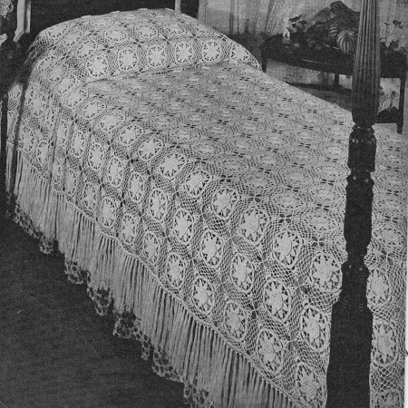
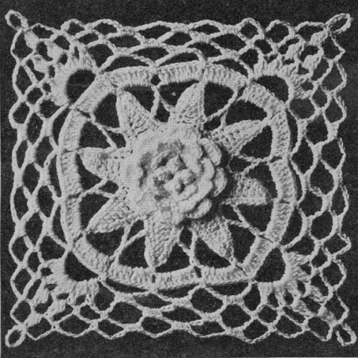

Louisiana Bayou Bedspread Pattern
A crochet Louisiana Bayou bedspread is a beautiful and nature-inspired piece that captures the essence of the enchanting Louisiana Bayou. It brings the tranquility and mystery of the bayou into your bedroom, creating a cozy and serene atmosphere.
MATERIALS:
AMERICAN THREAD COMPANY "PURITAN" MERCERIZED CROCHET AND KNITTING COTTON 52 300-yd.
Balls White, Ecru, Cream or Beige.
Motif measures about 5 1/2 inches.
262 Motifs are required for Spread measuring about 72 x 110 inches without fringe.
Steel Crochet Hook No. 7.
MOTIF Ch 6, join to form a ring, ch 3, 3 dc in ring, slip loop off hook, insert in 3rd st of ch and pull through, * ch 4, 4 dc in ring, sl loop off hook, insert in first dc and pull through, (popcorn st) repeat from * twice, ch 4, join in 1st popcorn st.
2nd Rnd: Sl st to next loop and over each loop work 1 sc, 4 dc, 1 sc.
3rd Rnd: Ch 4 and working in back of petal into the first row, sc in lower center edge of petal, ch 4, sc between petals, repeat from beginning all around. (8 loops)
4th Rnd: Over each loop work 1 sc, 5 dc, 1 sc.
5th Rnd: Ch 1 and working in back of petal, sc in lower center edge of petal, * ch 5, sc in center of next petal, repeat from * all around. (8 loops)
6th Rnd: Over each loop work 1 sc, 7 dc, 1 sc.
7th Rnd: Sc in sc of 5th row, * ch 9, sc in 2nd st from hook, 1 sdc in each of the next 2 sts, (sdc: thread over needle, insert in st and work off all loops at one time) 1 dc in each of the next 3 sts, 1 trc in each of the next 2 sts, sc in next sc in 5th row between petals and repeat from * all around. (8 leaves)
8th Rnd: Work 7 sc on side of next leaf, 3 sc in point of leaf, 7 sc on other side of leaf and repeat on all leaves.
9th Rnd: Sl st to point of next leaf, * ch 7, thread over twice, insert in 5th sc on side of same leaf, work off 2 loops twice, thread over twice, insert in corresponding sc on next leaf and work off all loops 2 at a time, ch 7, sc in point of next leaf and repeat from * all around.
10th Rnd: Sl st to loop, ch 3, work 7 dc in 1st loop and 8 dc in each remaining loop, join.
11th Rnd: Ch 9, sc between next 2 groups of dc, repeat from beginning all around.
12th Rnd: Sl st into loop, ch 3, (ch 3 at the beginning of a row counts as 1 dc) thread over, insert in loop and work off 2 loops, thread over, insert in loop and work off 2 loops 3 times, (a cluster st) ch 3, * 3 dc cluster st in same loop, (work off last 3 loops at one time) repeat from * 3 times, ** ch 5, 3 sc in next loop, ch 7, 3 sc in next loop, ch 7, 3 sc in next loop, ch 5, 5 cluster sts with ch 3 between each cluster st in next loop, repeat from ** all around, join in 1st cluster st.
13th Rnd: Sl st between 1st 2 cluster sts, * ch 5, cluster st in next loop, ch 3, cluster st in next loop, ch 5, sc in next loop, ch 5, sc in next loop, ch 7, 3 sc in next loop, ch 7, 3 sc in next loop, ch 7, sc in next loop, ch 5, sc in next loop, repeat from * all around.
14th Rnd: Sl st to center of loop, ch 5, cluster st in next loop, ch 9, sl st in top of cluster st for picot, ch 5, sc in next loop, ch 6, sc in next loop, * ch 6, 3 sc in next loop, repeat from * twice, ch 6, sc in next loop, ch 6, sc in next loop, repeat from beginning all around.
Motifs are joined in the last row as follows: Work one side of last row to corner, ch 5, cluster st in corner loop, ch 4, sl st in picot of 1st motif, ch 4, complete picot, ch 5, sc in next loop, ch 4, sl st in center st of corresponding loop of 1st motif, ch 4, sc in next loop, * ch 4, sl st in center st of next loop of 1st motif, ch 4, 3 sc in next loop, repeat from * twice, * ch 4, sl st in next loop of 1st motif, ch 4, sc in next loop of 2nd motif, repeat from * once, ch 5, work a cluster st in next loop, join picots andcomplete motif.
Join all motifs in same manner, having 3 rows of 17 motifs, 8 rows of 20 motifs (adding all motifs on one side for shaping at lower edge) and 3 rows of 17 motifs.
Edge: Attach thread on side and ** work 5 dc in each of the first 3 loops, * 1 dc in each of the next 3 sc, 5 dc in next loop, repeat from * twice, 5 dc in each of the next 2 loops, 4 dc in each of the next 2 loops, repeat from ** all around.
2nd Rnd: Ch 5, skip 2 dc, dc in next dc, * ch 2, skip 2 dc, dc in next dc, repeat from * across side, break thread. Work 2 ch meshes across lower edge and work other side to correspond. Do not work meshes on sides of corner shaping. Fringe. Cut 12 strands 15 inches long, double these and knot into mesh. Repeat in every other mesh across each side and lower edge.

HOME